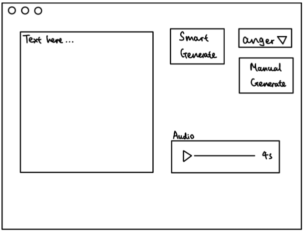
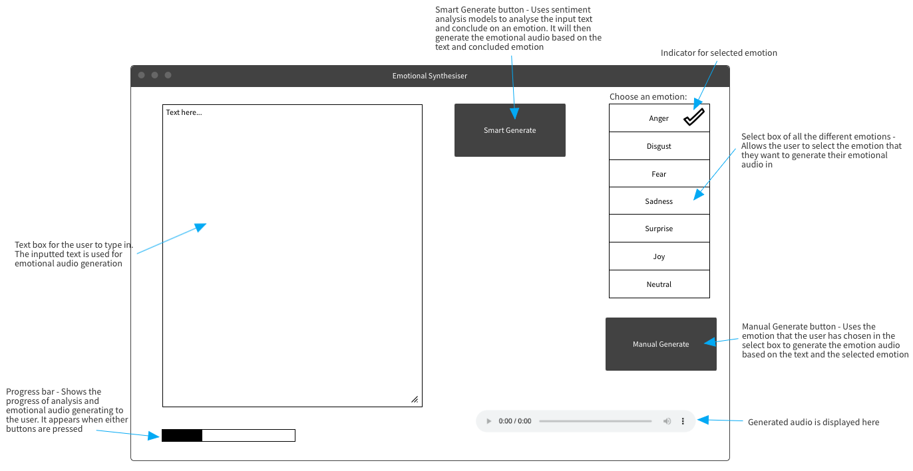
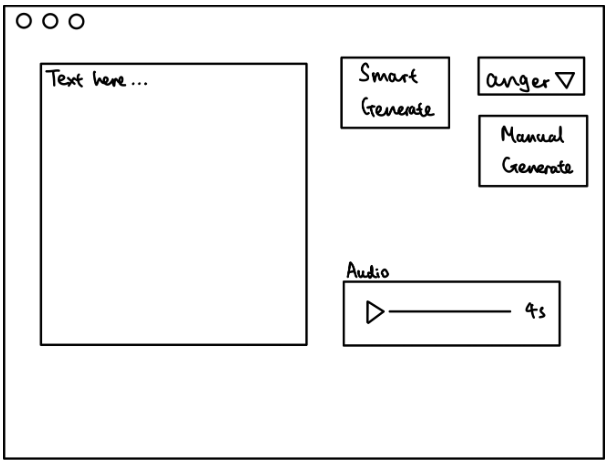
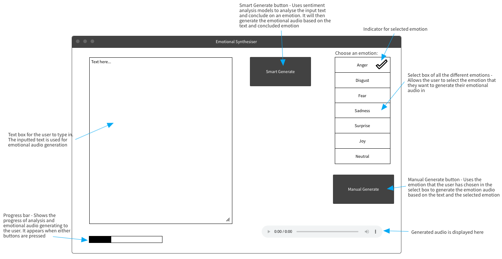
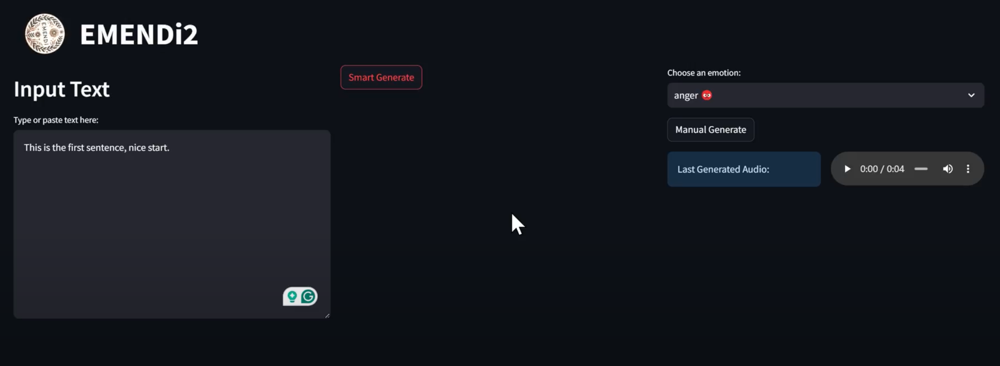

Project Blog Blog
Week 1-2
16th Oct 2023 - 29th Oct 2023
HCI Lectures and first requirements meeting on project specifications.
Week 3-4
30th Oct 2023 - 19th Nov 2023
We finished our HCI lectures and identified the key requirements of the project through pseudo-interviews. We then used personas and scenarios for our target users to better understand their goals and requirements for our software.

Bobby James (MND patient)
Bobby is in bed surrounded by medical equipment assisting his life processes. His children Hope and Mark are sitting near his bed. They are trying to converse with him but are visibly fidgety at the time it takes to reply and the lack of emotion in the voice. They want to make their time together as enjoyable and meaningful as possible despite Bobby’s difficulties with physical movement.
Hope James (daughter of MND patient)
Hope, a full time cardiologist, is living with her parents to maximize the time she can spend with her father, Bobby, who has been diagnosed with Motor Neuron Disease. After a long day at work, she is unable to converse with him as she usually did. She is emotionally distressed by her father's inability to move or communicate effectively, which has strained their relationship. Hope is determined to find a way to reconnect with her father emotionally and restore his ability to convey his sense of humor and emotions.The next step is to research the technologies that will be implemented to achieve the objectives of our MoSCoW list.
Week 5-6
20th Nov 2023 - 3rd Dec 2023
We create a MoSCow List to show all of our requirements.

We then improved it by dividing it into functional and non-functional requirements.
Function requirements
- Accurate sentiment analysis of text - Must have
- Accurate emotional audio generation - Must have
- Ensure that the frontend is implemented properly by sending the correct information - Must have
- Use multiple sentiment analysis models to create a scoring system - Should have
- Reusing previously generated audio files if they have the same text and emotion as the current input - Should have
- Allow the user to select an emotion to synthesise their text - Should have
- Eye-tracking UI - Could have
Non-functional requirements
- Comprehensive testing for all models used - Must have
- Easy to use and intuitive GUI - Must have
- Ability to integrate with the other text-generation team through creating a connection point to receive the text to analyse- Must have
- Deployable as an offline system - Should have
- The system should run on multiple different OS - Should have
- Documentations for all code - Could have
- Have complete code coverage when testing - Could have
- Train the ML models further with datasets - Could have
To achieve our requirements, we focused on conducting research on the different technologies that are suitable for this project.
One of our discoveries was ParlAI, which is a framework that can be integrated with NLP models with emotion analysis. These open-source models can be pre-trained or we can train them using datasets available through ParlAI.
To train our own models, we can use many online datasets that include dialogues/text and their emotions such as daily_dialogue dataset.
Week 7-8
4th Dec 2023 - 17th Dec 2023
We continued researching and learning new technology. For instance, we experiemented with Tkinter and PyQt as our GUI. These two frameworks can be implemented quite easily for a simple part of project but they both have disadvantages. For instance PyQt has a complex API and Tkinter's appearance is very outdated. Hence, we decided to find a new Python framework for our GUI.
We also researched new sentiment analysis models that could be useful for emotional classificiation of text such as BERT, VADER and RoBERT.
We also created a use case diagram to ensure that the system design and implementation is easier in the future.

Week 9-10
18th Dec 2023 - 1st Jan 2024
We continued focusing on the research and implementation of models. The process of trying to find an emotional audio generation model is not an easy task as the field is still quite unexplored.
However, there are many sentiment analysis models for emotional classification on Hugging Face. As a result, we tested many different ones with varying emotional texts generated by ChatGPT to find models that were extremely accurate.
Week 11-12
2nd Jan 2024 - 16th Jan 2025
We found an emotional audio generation model called EmotiVoice, which was capable of both voice cloning and generating audio based on text and an emotional prompt. However, the audio generated is not extremely accurate and has noticible disceprencies.
This was an issue because the main goal for our project was that the audio generated is accurate emotional audio generation to ensure efficient communications for MND patients. As a result, we continued to research new models.
Week 13-14
17th Jan 2024 - 31st Jan 2024
We experimented with different GUI frameworks such as Tkinter, PyQt and Streamlit


Finally, we concluded and created a prototype in Streamlit which allows the user to type in text and it will execute the text with multiply sentiment analysis models.
In our research, we found that each sentiment analysis model has their own pros and cons. Hence, we implemented an algorithm that ranks and takes the scores of different models and combines them together to conclude on an emotion.
Week 15-16
1st Feb 2024 - 15th Feb 2024
We created a presentation and presented our Elevator Pitch to different professors, detailing our project and its technologies.
We have also concludede on the GUI design through different drawings and online wireframe.
 



To finialise our Streamlit GUI design, we had to learn about Streamlit session states for functionalities such as button disabling.
Week 17-18
23rd Feb 2024 - 8th March 2024
We successfully integrated the Streamlit frontend with the backend processes of sentiment analysis and emotional audio generation.
The user can now input text and generate an emotional audio file based on what emotion the application classifies the text as. This is the smart generate function
The user can also input text and select an emotion to generate the audio in. This is the manual generate function
While generating the emotional audio, all buttons, text box and select box will be disabled. There will also be a scrolling display to indicate that the audio is being generated so that the user knows that their actions are responsive.
Once the audio has been generated, it will update the GUI and display the audio, allowing the user to play it.
Week 19-20
9th March 2024 - 23rd March 2024
We began preparing for the second 4 minute pitch and delivered it as a pre-recorded video
We also wrote unit tests to ensure the correctness of important code. Furthermore, we did a lot of algorithm testing and comparisons on different sentiment analysis and audio generation models.
Furthermore, we documented all code, explaning their functionalities for future understanding and maintenance.